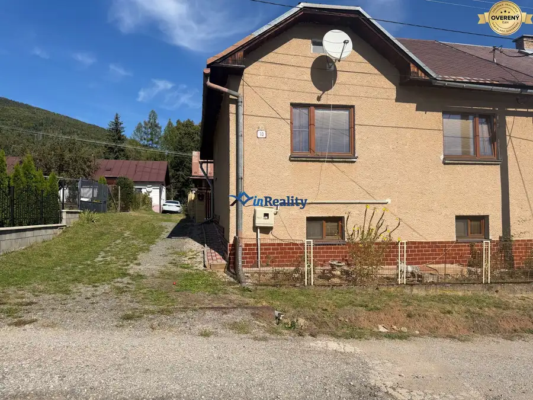
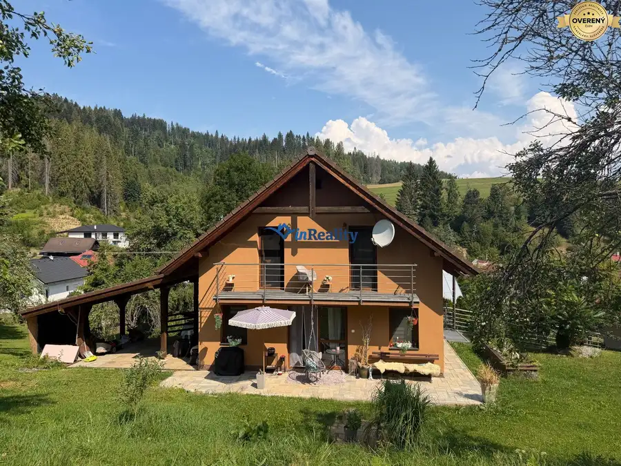

2-izbový byt v Závadke nad Hronom–krásne výhľady rekonštruovaný
Závadka nad Hronom
- Dispozícia2-izbový
- Plocha59 m²
- Poschodie3. z 5
- Stavpo rekonštrukcii
- Vlastníctvoosobné
O nehnuteľnosti
Ponúkame na predaj príjemný 2-izbový byt s rozlohou 58,80 m² v obci Závadka nad Hronom. Byt sa nachádza na 3. poschodí v zateplenom bytovom dome s výťahom, ktorý prešiel takmer kompletnou rekonštrukciou.
Byt je orientovaný na juh, vďaka čomu ponúka dostatok denného svetla a krásne výhľady na okolie. Je ideálnou voľbou na vlastné bývanie, ale aj ako investícia.
DISPOZÍCIA BYTU
vstupná chodba,
kúpeľňa spojená s toaletou a sprchovacím kútom,
kuchyňa s krásnou novou kuchynskou linkou a jedálenským stolom so stoličkami,
priestranná obývacia izba,
samostatná spálňa.
✨ REKONŠTRUKCIA A VYBAVENIE
Byt prešiel viacerými úpravami, ktoré zvyšujú komfort bývania:
nové rozvody elektriny,
murované bytové jadro,
nové stierky v kuchyni, chodbe a obývacej izbe,
nové podlahy,
nové interiérové aj vstupné dvere,
nové plastové okná s trojsklom,
krásna nová kuchynská linka.
Veľkou výhodou je aj zateplený bytový dom s výťahom, ktorý prešiel takmer kompletnou rekonštrukciou.
VÝBORNÁ CENA!
48 000€ – byt bez zariadenia
53 000€ – byt so zariadením
Stačí si vybrať variant, ktorý vám viac vyhovuje!
Ak hľadáte útulný byt s praktickou dispozíciou, južnou orientáciou, krásnymi výhľadmi a za výbornú cenu, táto ponuka vás môže osloviť.
Lokalita: Závadka nad Hronom
Rozloha: 58,80 m²
Poschodie: 3. poschodie
Výťah: áno
☀️ Orientácia: juh
V prípade záujmu o bližšie informácie alebo obhliadku ma neváhajte kontaktovať! Dáša Frgelcová Vránska, ,
AK VLASTNÍTE NEHNUTEĽNOSŤ A CHCETE JU PREDAŤ, PRÍPADNE VIETE O NIEKOM, KTO CHCE PREDAŤ DOM, BYT ALEBO POZEMOK, NEVÁHAJTE MA KONTAKTOVAŤ A FINANČNE VÁS ODMENÍME ZA TIP.
NEBOJTE SA REKONŚTRUKCIE!!
SPROSTREDKUJEME KONTAKTY, PRÍPADNE DOHODNEME ŠIKOVNÝCH LOKÁLNYCH OVERENÝCH A CENOVO DOSTUPNÝCH MAJSTROV - MURÁROV, OBKLADAČOV, ELEKTRIKÁROV, VODÁROV, ATĎ., KTORÍ VÁM RADI POSKYTNÚ SVOJE SLUŽBY.
Parametre
| Celková rozloha | 59 m² |
|---|---|
| Dátum zverejnenia | 12. 10. 2026 |
| Energetický certifikát | nie |
| Kúpeľňa | sprchovací kút |
| Okná | plastové |
| Orientácia | južná |
| Pivnica | áno |
| Plyn | áno |
| Poschodie | 3/vyššie poschodie |
| Postavené z | panel |
| Počet izieb | 2 |
| Počet poschodí | 5 |
| Stav | po rekonštrukcii |
| Vlastníctvo | osobné |
| Vykurovanie | spoločné |
| Výťah | áno |
| Zateplený objekt | áno |
| Úžitková plocha | 59 m² |
Kde to je
Mohlo by Vás zaujímať

Rodinné domyNové10 119 000 €Na predaj rodinný dom v obci Bacúch – Možnosť bývania aj rekreácie Bacúch 5-izbový140 m² ? NA PREDAJ RODINNÝ DOM V OBCI BACÚCH – MOŽNOSŤ BÝVANIA AJ REKREÁCIE Hľadáte zachovalý rodinný dom v pokojnom prostredí, ktorý môžete využívať na…
Rodinné domyRezervované10 194 000 €4-izbový rodinný dom s krytou terasou a balkónom, posled Čierny Balog 4-izbový140 m² Ponúkame na predaj 4-izbový rodinný dom v obľúbenej obci Čierny Balog, situovaný v pokojnej slepej ulici, kde si užijete maximálne súkromie, ticho,…